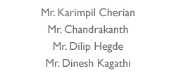

FORMULA STUDENT HUNGARY - August 2012
Formula Student Hungary started in 2009 and is a favorite amongst the European teams. While it attracts teams from around the world, the participation is dominated by the highly competent German teams. Competition takes place at the City of Gyor about two hours from Budapest, Hungary. Gyor is a key-centre for the automobile sector in Central and Eastern Europe, thus, ensuring that the competition is well backed and supported by the industries.
The Build up:
In 2011, our logistics troubles continued well after FSAE Michigan, as a result of which the car was brought back in September, a good four months late. This cut short our preparation time for the next season. After much deliberation, we decided to target FS Hungary '12 as it gave us sufficient time to test, analyze and re-engineer our car. All these improvements paved way to the transformation of the C&C Alpha NR-XI to the DH NR-XII.
41 teams, 12 nations, 1 event. Formula Student Hungary.
The Event:
In August 2012, NITK Racing participated at Formula Student Hungary (FSH). In its third year now, FSH saw a total of 41 teams, from twelve nations, competing for the top honors. Spread over four days, August 17 - 20, the event managed to attract teams, students, audience and the media in an unprecedented manner. With Audi Hungaria as FSH's main sponsor, they was little doubt that the event would be anything short of perfect.
Understandably, the competition was intense and the atmosphere fired up. Some teams had close to eight years of experience to their credit, while others had their budgets running into crores of rupees. European teams have a technological and financial edge when compared to their counterparts from around the world. It was understood that an uphill task lay ahead of us. We realized early that we had come to a competition where the one thing that we could take back, unbeaten, would be the experience of competing with the best teams.
The teams, with their diverse backgrounds, varied experiences and disparate credibilities, found the event as an ideal window to interact amongst themselves. It was very encouraging and comforting to be noticed, appreciated and helped by other teams. A shout out for KEFO Motorsport, the team from Kecskemet, Hungary for helping NITK Racing.
The Results:
Clearing the technical inspection was our objective that year - something which we achieved. Teams generally take 2 - 4 years to clear this stage for the first time, but completing it in our first attempt is a performance we are proud of. Besides the technical inspection, we cleared tilt and noise tests as well. During the brake test, our steering wheel flexed thus, hindering us from proceeding ahead.
In the Static events leg, we secured a TOP 10 spot in the Business Presentation and the Cost Report events. Design report saw us at a credible 33rd place.
At the close of FS Hungary, NITK Racing placed a respectable 34th, beating 6 established teams. The results, clearly not the limit of our potential, were a personal milestone for NITK Racing and also a landmark feat in the history of Indian Formula Student teams - no Indian team has had such a successful experience at their maiden event. Personal milestone aside, the support we received at Hungary is greatly appreciated. The support further added to the rich learning experience.
Powered By


- 